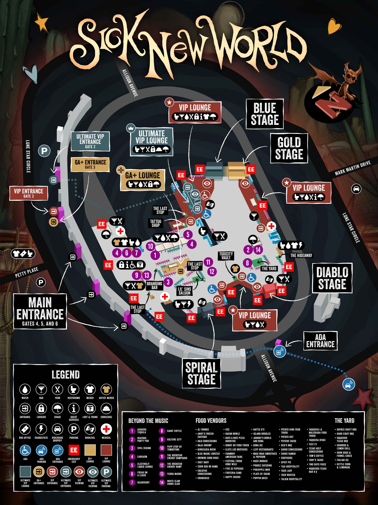

PROFILE SHORTLIST
Tj’s picked sets
0 SETS
Festival schedule planner
Texas Motor Speedway

Combines all four profiles’ priorities, gives Must see the most weight, and skips overlapping sets.
Plans change. The riffs don’t.
See you at the stages.

Pick your name and enter your group passphrase.
This removes all priorities you’ve saved for this profile. This can’t be undone.